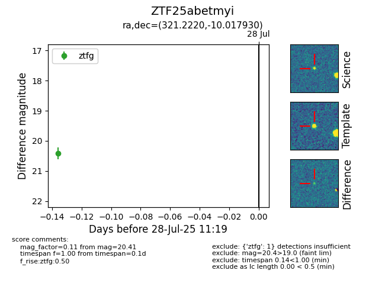

Target ZTF25abetmyi at 2025-07-28 11:19, see:
FINK: fink-portal.org/ZTF25abetmyi
Lasair: lasair-ztf.lsst.ac.uk/objects/ZTF25abetmyi
ALeRCE: alerce.online/object/ZTF25abetmyi
alt names
ZTF25abetmyi (ztf,fink)
coordinates:
equatorial (ra, dec) = (321.2220,-10.01793)
galactic (l, b) = (42.0456,-38.55443)
photometry
last ztfg=20.41
1 ztfg detections
